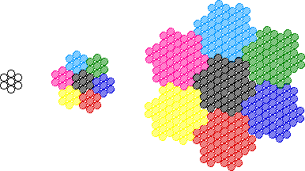

| Appropriately bundled fiberoptics form an optical waveguide of very low distortion. Using recursive tilings to construct bundles, Lee Cook of Galileo Electro-Optics Corp. showed the edges of optically useful tilings are fractal. This led to the design of fractal fiber arrays, called multi-multifibers, with improved image contrast. The preimeters of these multi-multifibers are similar to the Gosper snowflake curve. Gosper snowflakes tile the plane; and a large Gosper snowflake can be tiled with 7 Gosper snowflakes scaled by 1/sqrt(7) horizontally and vertically. |
| A bundle of seven optical fibers (one in the middle, six around the edges) forms a very crude approximation of a Gosper snowflake. A bundle of seven of these bundles forms a better Gosper snowflake as its perimeter. Continue this recursive process several steps and a fractal fiberoptic cable results. On the left below we see a cross-section of a bundle of seven fibers. The middle is a bundle of seven bundles (one shaded to show its relative position in the bundle). The right is a bundle of seven of these bundles. Notice that the periphery of the increasingly large bundles looks more like the Gosper snowflake. |
|  |